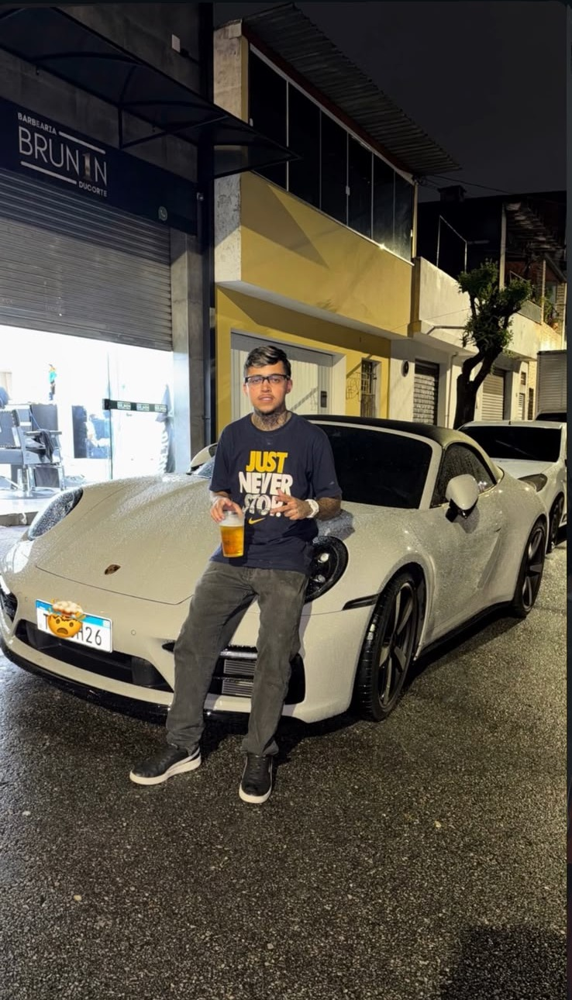
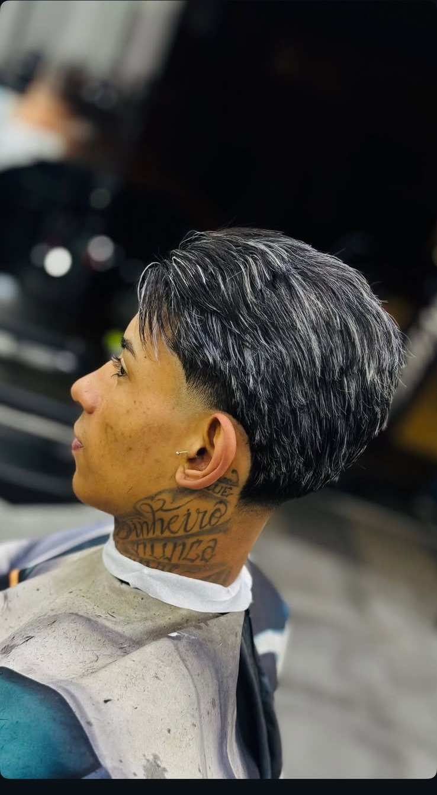
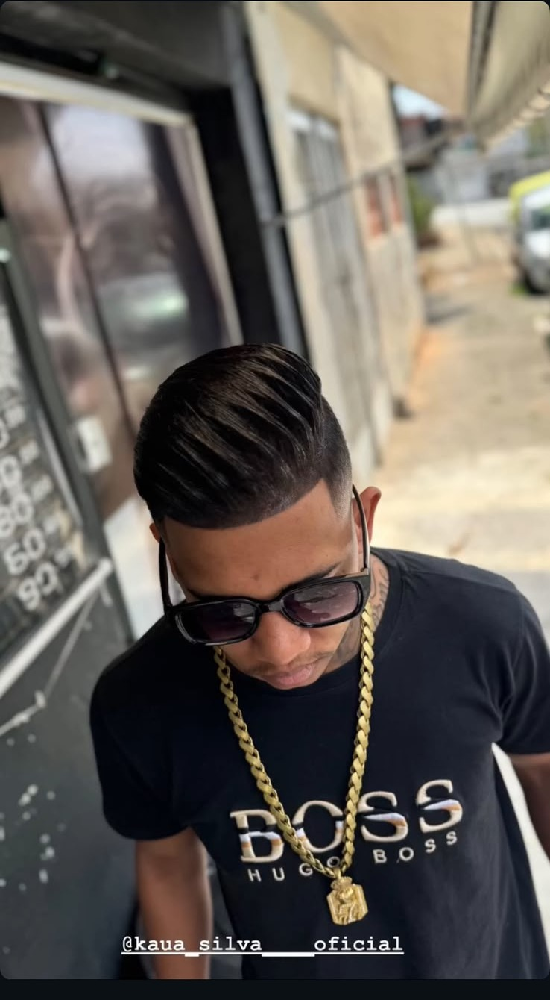
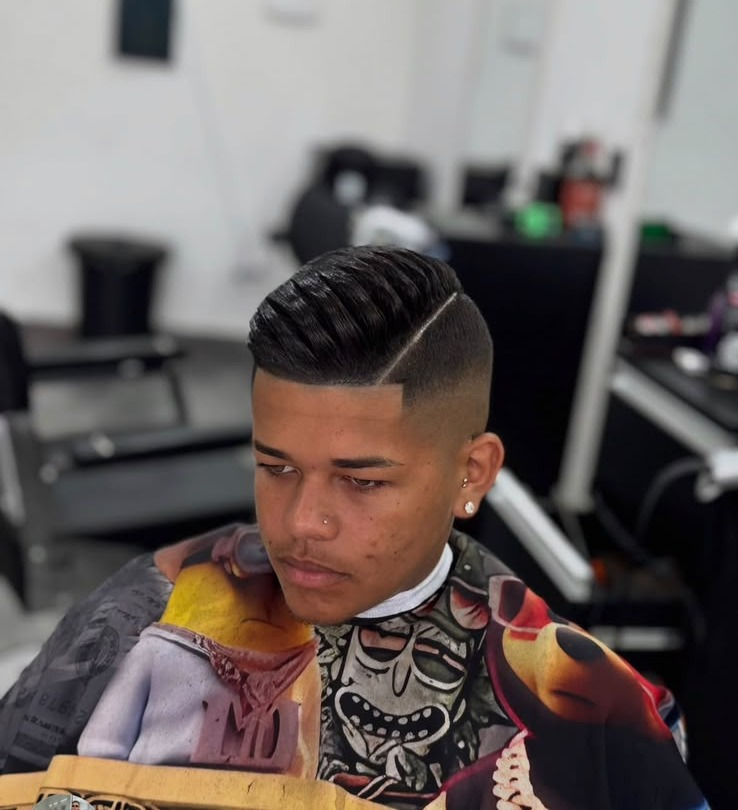

BruninDucorte
Dono · Cortes e visagismo
Barbearia 01 de Diadema
Navalha afiada, degradê na régua. Tu senta, a gente resolve.
Destaque
A Porsche branca na frente da Barbearia BruninDucorte — toque na foto para ampliar e revelar, e assista ao clipe cinematográfico exclusivo.

O time
Dono · Cortes e visagismo
Especialista em corte degradê
Cortes, barba e penteados
As fotos do Karl e do TZ chegam em breve — por enquanto, a inicial de cada um.
Sobre
Cria de Diadema, Bruno transformou a cadeira na Casa Grande em ponto de encontro: a Barbearia 01 de Diadema é onde o degradê sai na régua e o papo é reto.


Barbearia 01 de Diadema
Toque num serviço para escolher e agendar. Sem sinal — pagamento só na barbearia.
Galeria





Agendamento
Escolha o serviço, o profissional, a data e o horário — e confirme com seu nome e WhatsApp.
Atendimento automático da barbearia, na hora.